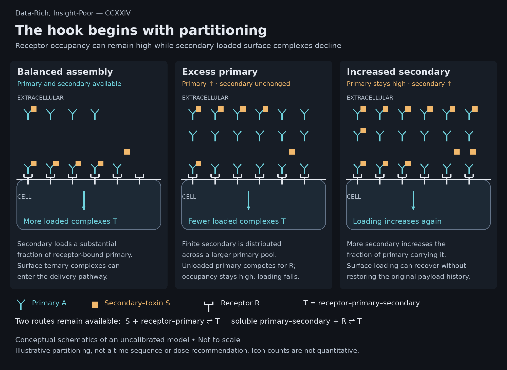
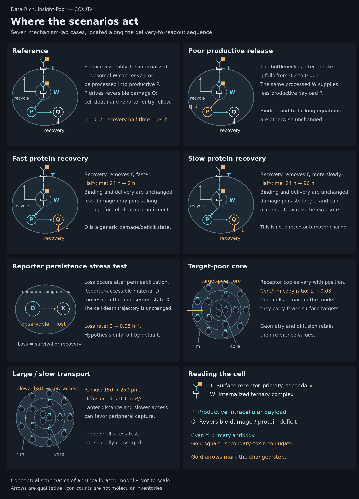
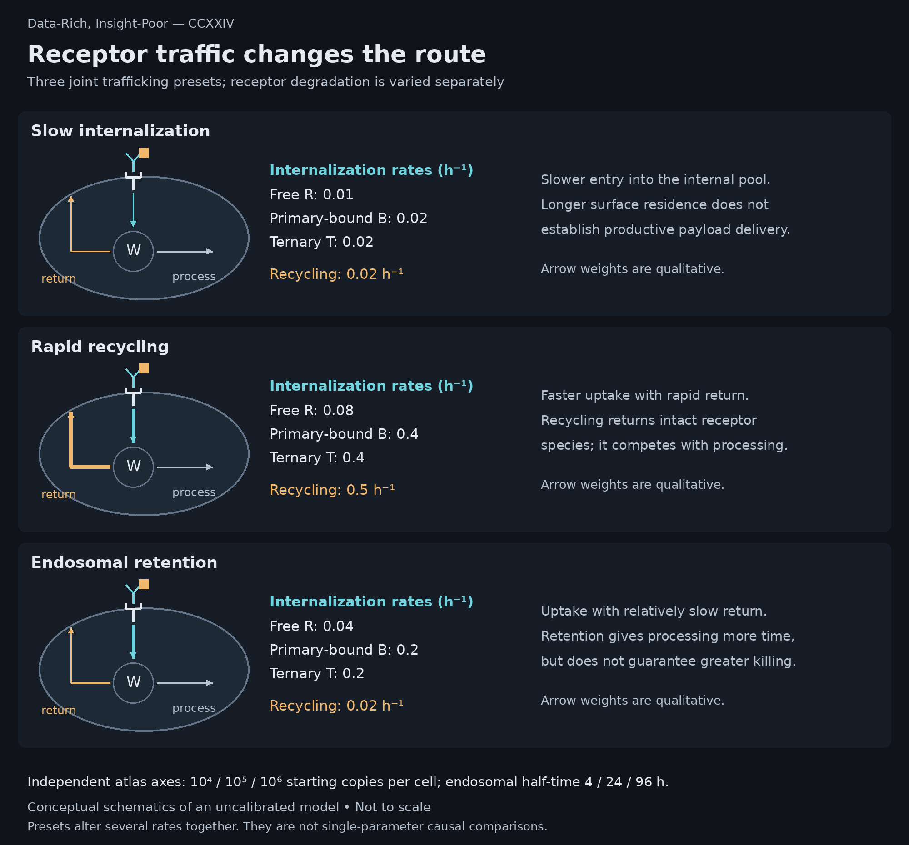
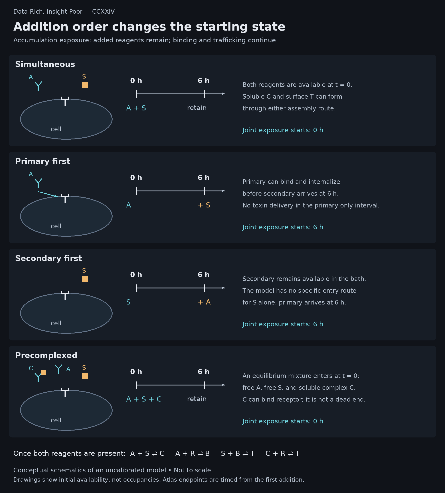

More reagent. A different system.
Loading computed scenarios…
Primary × secondary concentration
Normalized to a modeled, fully permeabilized initial population.
Readout is an observation model
At the selected primary concentration and 3 nM secondary.
Where does the response occur?
Death commitment in the innermost and outermost model shells, at the selected primary dose and 3 nM secondary.
Interpretation boundary
A low, flat signal is not a rescued assay. A plateau can conceal an upstream hook. More secondary does not identify the failed step.
Inspect exact values for displayed curves
Follow one simulation
Start with 100,000 surface receptors per cell. Follow assembly, productive delivery, damage, and the signal that becomes visible later.
Fixed Reference biology · 150 µm radius · simultaneous addition · accumulation. This section is independent of the explorer controls above. Every snapshot is computed, not interpolated.
Loading the verified trajectory…
Compare the three conditions at 72 hours
| Measurement | A 8.254 / S 3 nM | A 1,000 / S 3 nM | A 1,000 / S 100 nM |
|---|
A recovered endpoint does not establish recovered delivery. More secondary can restore near-maximal fluorescence without restoring the original payload level. This is one illustrative parameter set, not a diagnosis of an experimental assay.
The model retains a fixed initial-cell receptor scaffold after death commitment. Late trafficking and payload counts may be overestimated and are not measurements in surviving cells. Fluorescence is normalized to a hypothetical fully permeabilized population, not calibrated CellTox Green RFU.
Read the full worked equations and assumptions →What this model does not establish
These simulations do not identify a mechanism in a real assay. Effective 1:1:1 binding omits multivalent cross-linking; the three-shell geometry is deliberately coarse. Receptors persist on a fixed initial-cell scaffold after death commitment. Neither commercial kit calibration nor empirical fluorescence loss is assumed.
Reporter loss is off by default. The mechanism lab exposes it only as a stress test. “Protein recovery” is a generic downstream repair timescale, distinct from endosomal receptor degradation and surface internalization.
All delayed-addition comparisons here use the same clock from first addition. They therefore also differ in combined-reagent exposure duration. Precomplexing represents the equilibrium limit in the bath, not a particular incubation protocol.
Locate the changed step
These fixed diagrams explain the scenario families; they do not respond to the explorer controls. They depict model assumptions, not measured molecular inventories or calibrated biology.
The hook: balanced assembly, excess primary, increased secondary
At fixed secondary supply, excess primary distributes the conjugate across a larger primary pool while unloaded primary competes for receptors. More secondary can increase surface ternary assembly. Soluble primary–secondary complex can still bind receptor; it is not an irreversible sink. The three panels are separate conditions, not sequential reagent additions, and icon counts are qualitative. “Balanced” does not mean equimolar or experimentally optimized.
Open full-resolution figure
Restored surface assembly need not restore cumulative payload delivery or identify the cause of an experimental fluorescence hook. The model remains uncalibrated.
Seven mechanism-lab scenarios
Compare productive processing, damage recovery, reporter persistence, tissue access, and core receptor abundance. T is surface ternary complex, W is internalized complex, P is productive payload, and Q is reversible damage. Recovery removes Q; it does not export payload. Tissue circles denote cells and cyan marks denote targets, with illustrative counts. Core cells are retained in the target-poor scenario.
Open full-resolution figure
Three receptor-trafficking presets
Each preset changes several trafficking rates together. The drawings follow the ternary complex; analogous terms apply to free and primary-bound receptor. Receptor copy number and retained-endosomal degradation half-time are varied independently in the atlas. Synthesis and other unchanged terms are omitted from these simplified views.
Open full-resolution figure
Four addition orders under accumulation
A is primary antibody; S is secondary–toxin conjugate; C is soluble A–S complex; R is free receptor; B is receptor–primary complex; T is receptor–primary–secondary complex. Delays are six hours in the browser dataset. All binding routes remain active after both reagents become available. Precomplexing is an equilibrium mixture, not complete binding or a specified incubation duration.
Open full-resolution figure
All arrows are qualitative and drawings are not to scale. Reporter loss is a hypothesis, off by default; the large-organoid transport stress case is not spatially converged. The article provides complete figure captions and interpretation boundaries.